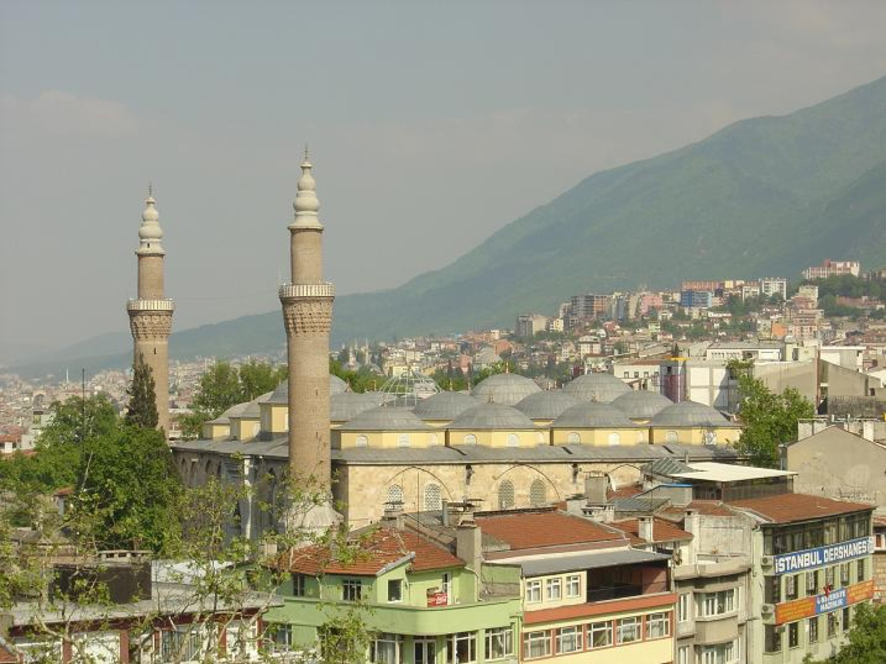
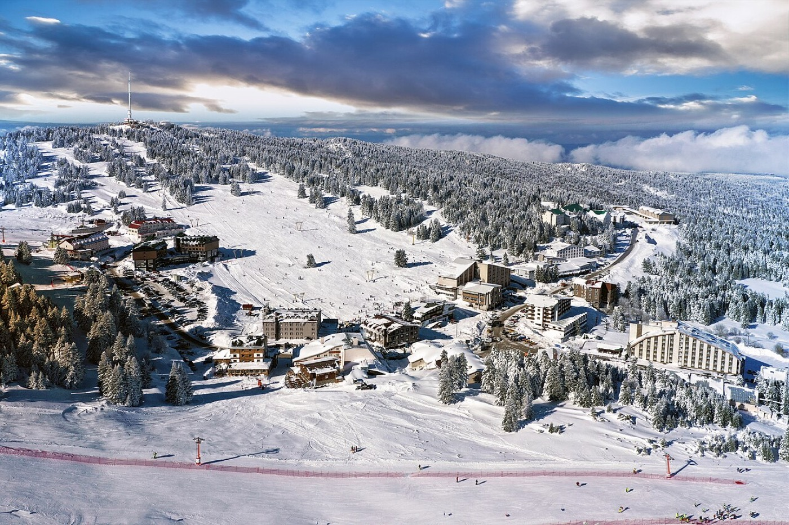
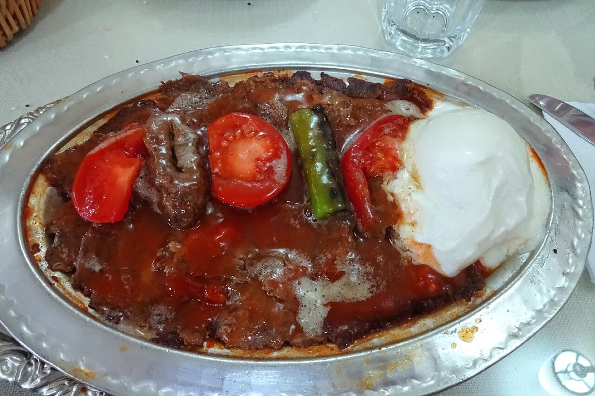
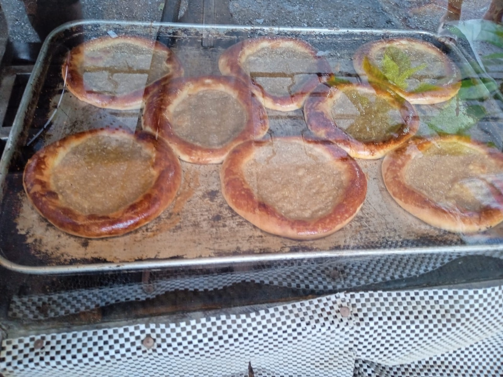

Ulu Cami & Hanlar Bölgesi
Şehrin tarihî kalbi. Ulu Cami'nin hat sanatını görün; Koza Han'ın avlusunda çay molası verip ipek dükkânlarını gezin.
Osmanlı'nın ilk başkentinden Uludağ'ın zirvesine; göl kıyılarından asırlık çarşılara uzanan Bursa, her mevsim başka bir hikâye anlatır.


İlgi alanına göre ara, filtrele ve beğendiğin durakları gezi planına ekle. Planın bu cihazda otomatik saklanır.
Şehrin tarihî kalbi. Ulu Cami'nin hat sanatını görün; Koza Han'ın avlusunda çay molası verip ipek dükkânlarını gezin.
Uludağ eteklerinde, taş sokakları ve renkli Osmanlı evleriyle zamanda yolculuk hissi veren UNESCO köyü.
Uluabat Gölü kıyısındaki yarımadada gün doğumu, balıkçı tekneleri ve asırlık ağlayan çınar eşliğinde sakin bir kaçamak.
Roma ve Bizans izleri, Ayasofya, tarihî surlar, çini atölyeleri ve İznik Gölü gün batımıyla başlı başına bir rota.
Uludağ yalnızca kışın değil; yürüyüş, kamp, manzara ve serin yayla havası için yıl boyunca Bursa'nın simgesidir.
Kış sporları, teleferik, yaylalar ve farklı zorluklardaki yürüyüş rotaları.
Mustafakemalpaşa yakınında, 38 metreden dökülen sular ve orman havası.
Gölyazı çevresinde kuş gözlemi, tekne manzaraları ve göl kıyısı gün batımı.
Kaplıcaları, mağarası, vadisi ve yürüyüş yollarıyla dinlendirici bir doğa molası.
Et yemeklerinden hamur işlerine, sütlü tatlılardan coğrafi işaretli kestane şekerine uzanan köklü bir sofra kültürü.

01 / İMZA LEZZETPidelerin üzerine döner, domates sosu, yoğurt ve kızgın tereyağıyla Bursa'nın dünyaca bilinen klasiği.
Küp doğranmış pide, köfte, sos, yoğurt ve tereyağıyla Bursa sofralarının vazgeçilmezi.
Kenarları yüksek, ortası kıymalı küçük yuvarlak pide; fırından sıcak çıktığında mutlaka deneyin.
Kestanenin şurupta pişirilmesiyle hazırlanan, Bursa ile özdeşleşmiş coğrafi işaretli tatlı.
Peynirli hamurun şerbetle buluştuğu, Mustafakemalpaşa'dan şehre yayılan geleneksel tat.

06Özellikle kahvaltıda ve çay yanında sevilen, yoğun tahin aromalı Bursa klasiği.
İlk ziyaret için tarih, doğa ve lezzeti dengeli biçimde bir araya getiren kısa bir rota.